Thành quách Nhật — Himeji / Nijō
Tổng mặt bằng

Thiên Thủ Các (lầu 10 tầng)
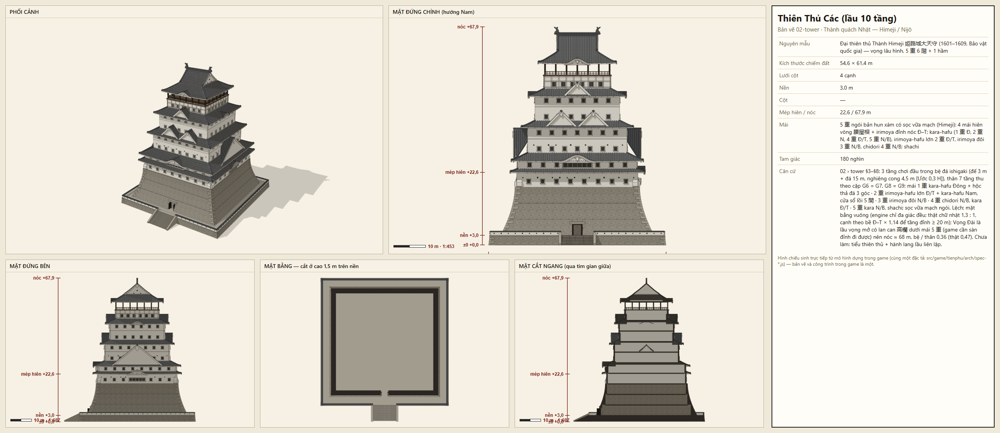
Đại Quảng Gian (Ōhiroma 大広間)
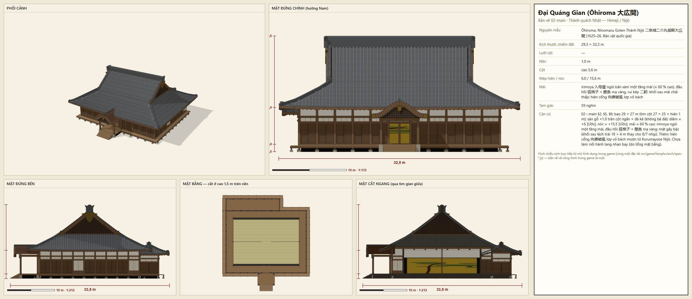
Thức Đài (Shikidai 式台)
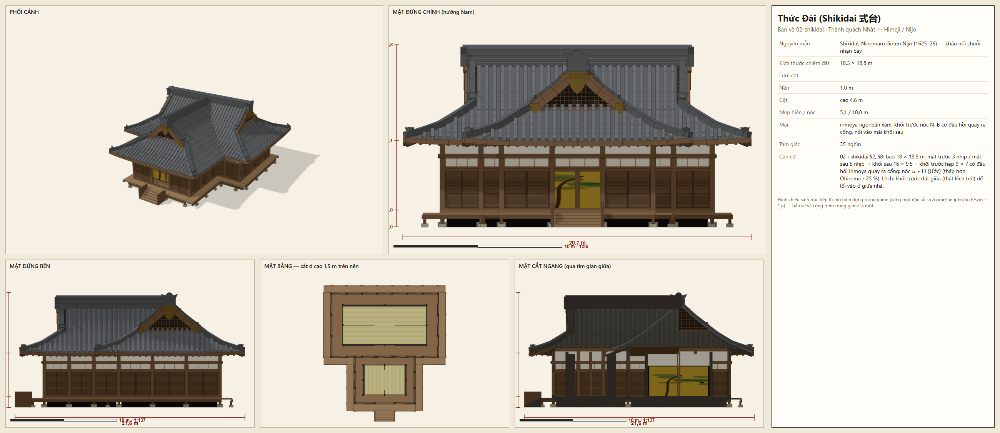
Hắc Thư Viện (Kuroshoin 黒書院)
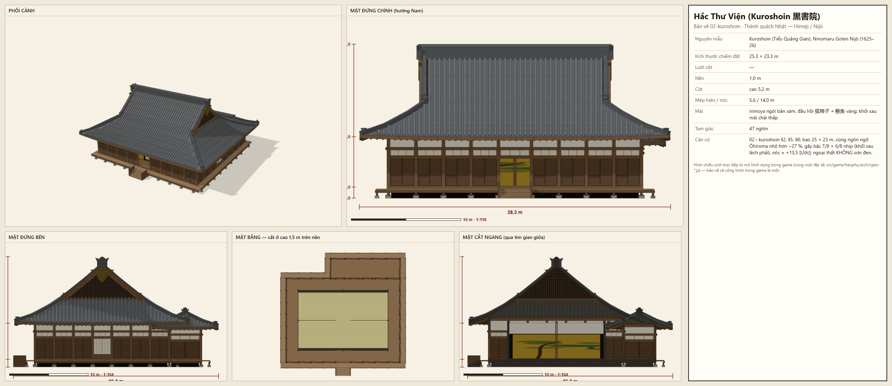
Bạch Thư Viện (Shiroshoin 白書院)
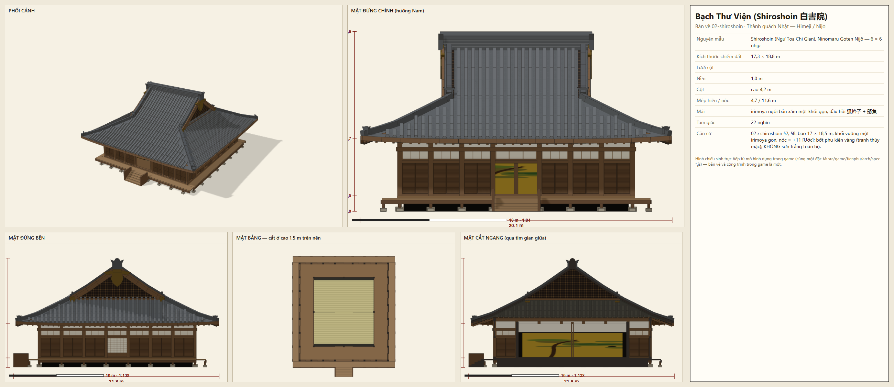
Hóa Trang Lâu (Keshō-yagura 化粧櫓)
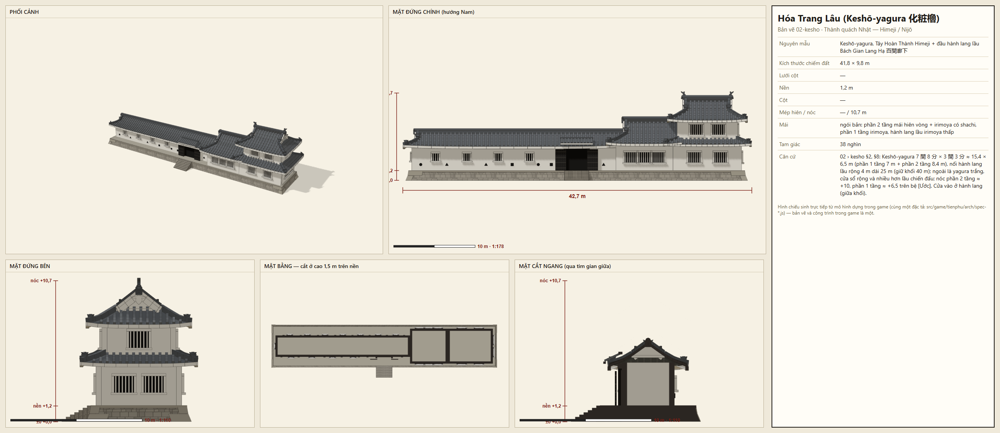
Kho Gạo (Kura 米蔵)
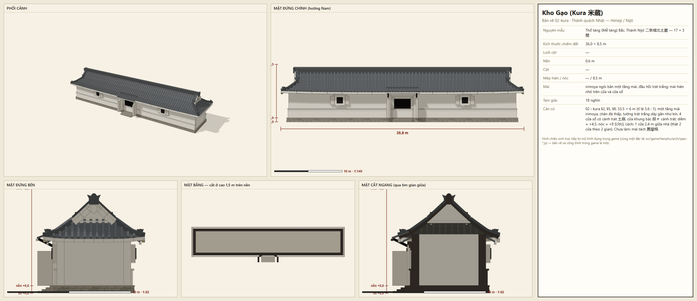
Chuồng Ngựa (Umaya 馬屋)
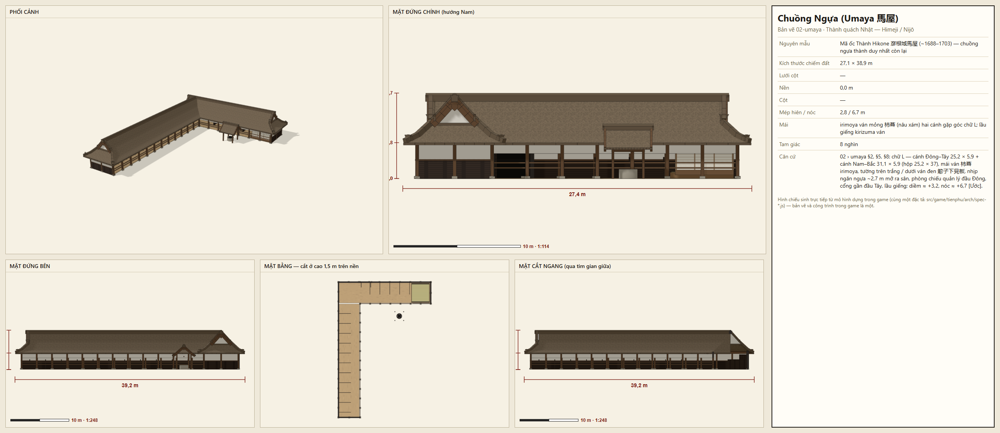
Masugata Tây — cổng ngoài Kōraimon 高麗門
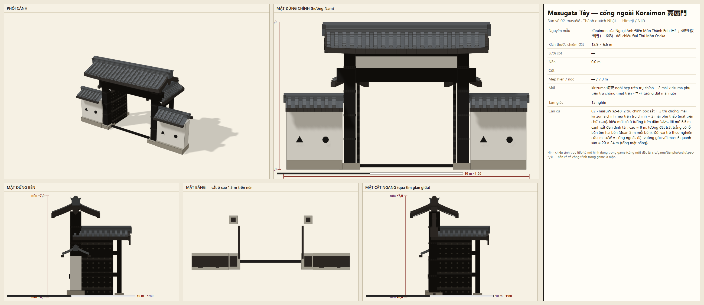
Masugata Đông — cổng lầu Yaguramon 櫓門
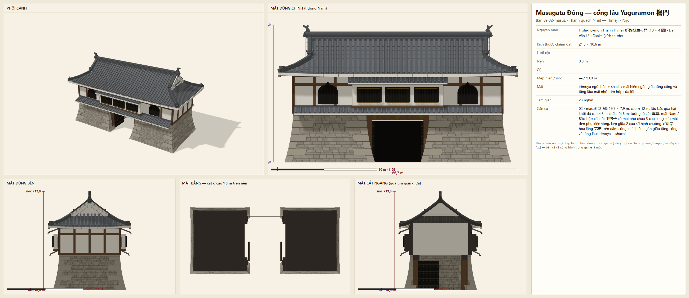
Trà Thất Kōraku
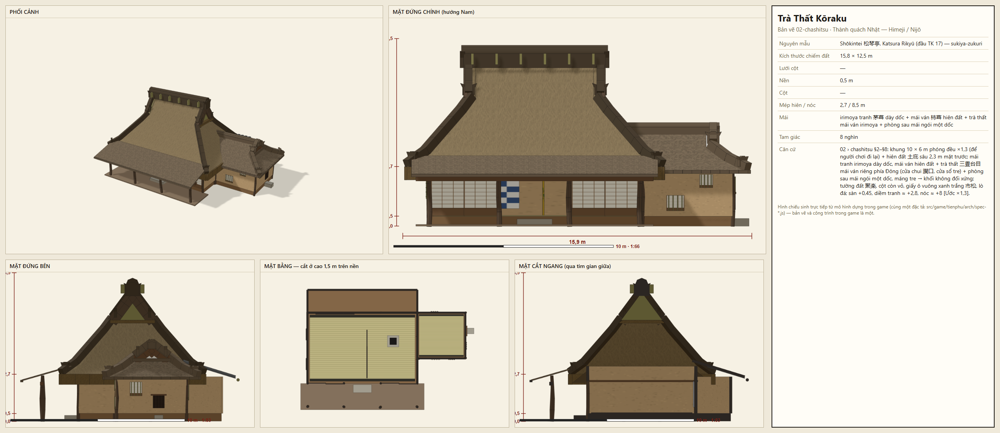
Vọng Sơn Đình
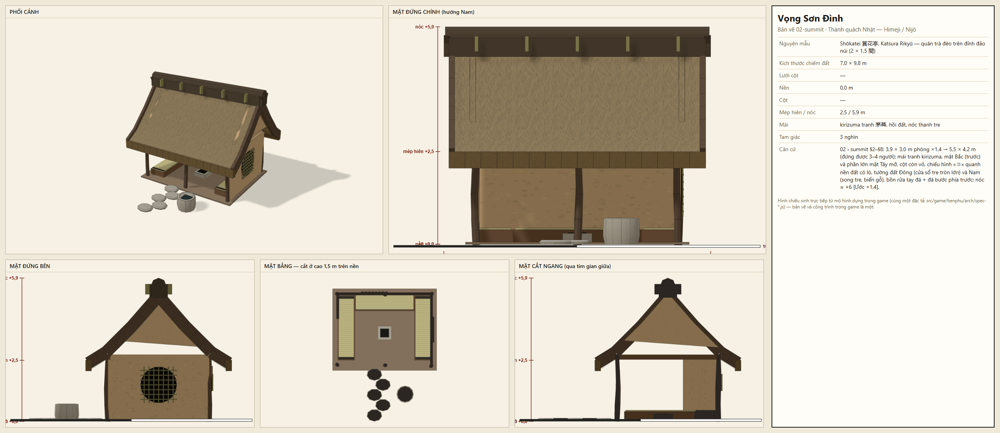
Lầu Góc Tây Nam
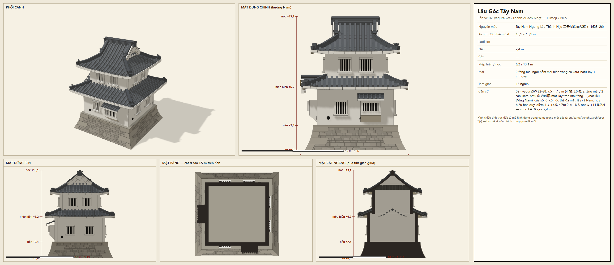
Lầu Góc Đông Nam
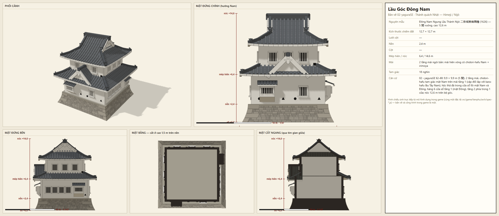
Lầu Góc Đông Bắc
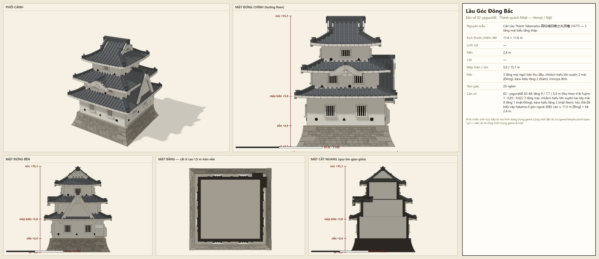
Lầu Góc Tây Bắc
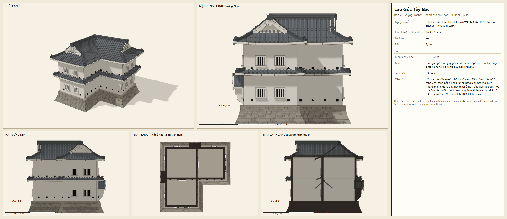
Đình Nghỉ Vườn
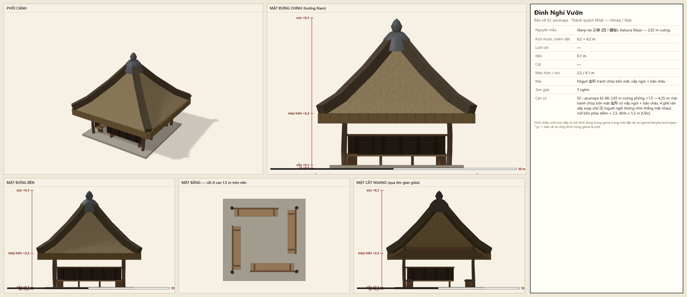
Đình Chờ Trà
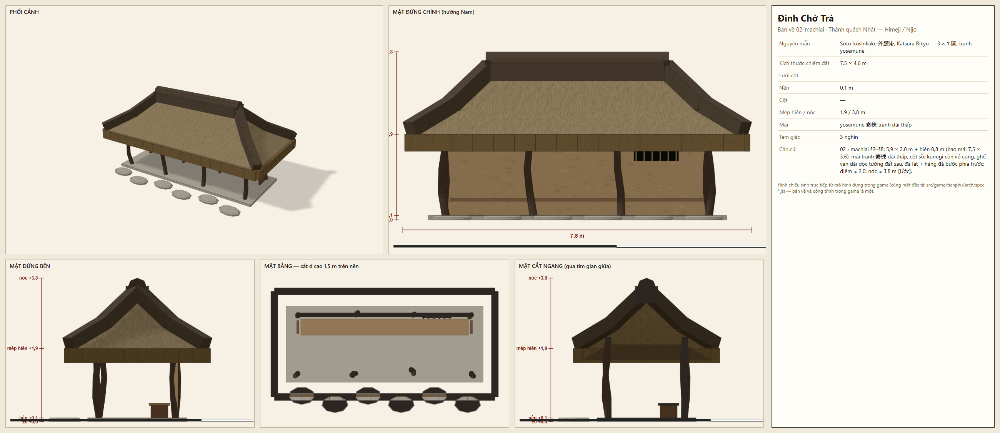